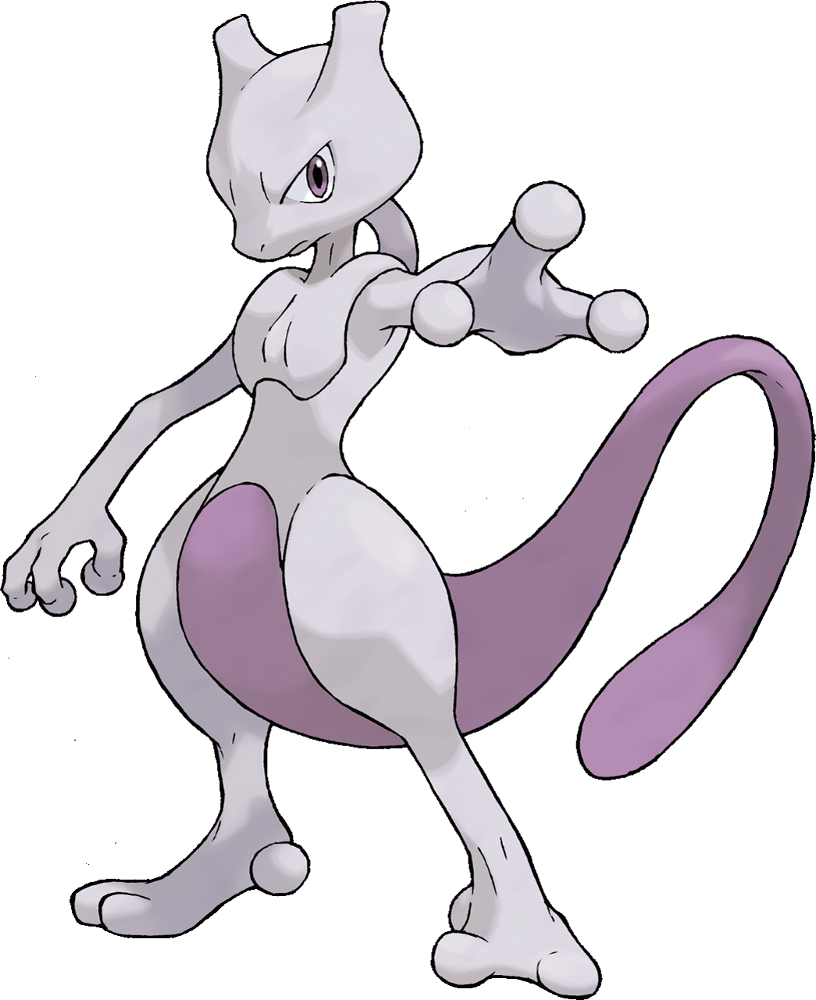

-
Pikachu
HP 300

Descrição
Os Pikachus são pequenos roedores de quarenta centímetros e de seis quilogramas, com um corpo redondo, pernas curtas e uma longa cauda, quando macho, a cauda tem um formato de um raio, mas se o Pikachu for fêmea sua cauda ganha um coração na ponta.
-
Charizard
HP 800

Descrição
Geralmente, um Charizard é competitivo. Ele adora a batalha e seu espírito competitivo também é notável, uma vez que nunca vai cuspir fogo em um inimigo mais fraco a menos que provocado ou ordenado. Quando fica muito irritado, as chamas em sua cauda se tornam branco-azuladas.
-
Mewtwo
HP 1200
Descrição
Mewtwo foi criado geneticamente em um laboratório, sendo um clone do misterioso antigo Pokémon Mew. É uma criatura com uma postura humanóide, mas tem algumas características felinas.
-
Garchomp
HP 1000

Descrição
Garchomp são pokémons dragões azul escuro, com um ventre vermelho que abrange desde o meio do seu abdómen, as suas mandíbulas e em seguida para a parte inferior dos seus braços. Diz-se que quando alguém corre em alta velocidade, suas asas criam lâminas de vento que podem derrubar árvores próximas.
-
Mega Sceptile
HP 1000
Descrição
As folhas que crescem no corpo de Sceptile são muito afiadas. Este Pokémon é muito ágil - salta por todos os ramos das árvores e salta sobre o seu inimigo por cima ou por trás.
-
Empoleon
HP 900

Descrição
Empoleon, o pokemon pinguim. Ele nada tão rápido quanto um barco a jato. As bordas de suas asas são afiadas e podem cortar gelo à deriva..